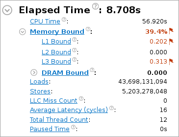
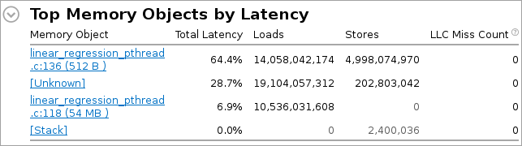
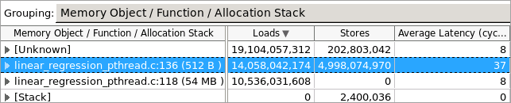

When the sample
application exits, the
Intel®
VTune™ Amplifier
finalizes the results and opens the
Memory Usage viewpoint where each window or pane is configured
to characterize how effectively your application uses memory resources and
identify potential memory access related issues. To interpret the data on the
sample code performance, do the following:
When the sample
application exits, the
Intel®
VTune™ Amplifier
finalizes the results and opens the
Memory Usage viewpoint where each window or pane is configured
to characterize how effectively your application uses memory resources and
identify potential memory access related issues. To interpret the data on the
sample code performance, do the following:
Understand the Memory Access Metrics
Start analysis with the
Summary window. To interpret the data, hover over the question
mark icons
 to read the pop-up help and
better understand what each performance metric means.
to read the pop-up help and
better understand what each performance metric means.
The Result Summary section provides data on the overall application performance per the following metrics:
The Elapsed time metric shows the wall time from the beginning to the end of the collection. Treat this metric as your basic performance baseline against which you will compare subsequent runs of the application. The goal of your optimization is to reduce the value of this metric.
VTune Amplifier highlights metrics values that exceed the threshold set for the corresponding metric. Such a value highlighted in red and marked with a flag signifies an application-level memory access issue. Hover over the highlighted metric value to view the text with the detected issue, potential cause and recommendations on the next steps.
For the lreg-pthread application, the following metrics are high:
- Memory Bound - this metrics shows how memory issues affect the performance.
- L1 Bound - this metric shows how often machine was stalled without missing the L1 data cache.
- L3 Bound - this metric shows how often CPU was stalled on L3 cache, or contended with a sibling Core.
To identify the cause, you need to explore the Bottom-up pane.
The Top Memory Objects by Latency section displays memory objects (variables, data structures, arrays) that introduced the highest latency to the execution of the application.
For the sample application, the linear_regression_pthread.c.136(512 B) object introduced the highest latency.
Identify Memory Access Issues
From the Top Memory Objects by Latency section, click the top memory object that introduced the highest latency to open the Bottom-up window on the selected object. By default, the data in the grid is sorted by Memory Object. You may change the grouping level using the Grouping drop-down menu at the top of the grid.
You see that the size of the highlighted linear_regression_pthread.c:136 memory object is only 512 bytes. The object should fit fully into the L1 cache, however the Average Latency metric shows the latency of 37 cycles. This value far exceeds the normal L1 access latency and this shows that the application has a contention issue that can be either true or false sharing.
Analyze Code
You identified the memory object that introduced the memory access issue. Double-click the linear_regression_pthread.c:136 (512 B) object to view the source code. VTune Amplifier opens the source code highlighting location where the linear_regression_pthread object was allocated.

You see that the tid_args variable allocates memory to the lreg_args structure using the num_procs variable (the number of threads) as the size of the structure.
Open the
Bottom-up window, click the arrow sign
 to expand the
linear_regression_pthread.c:136 (512 B) object and
double-click the
linear_regression_pthread function to find the source
code that accesses the
lreg_args structure.
to expand the
linear_regression_pthread.c:136 (512 B) object and
double-click the
linear_regression_pthread function to find the source
code that accesses the
lreg_args structure.
You see that the threads independently access their elements in the array that can be located on the same cache line, and this indicates false sharing. You need to optimize the source code to make threads always access different cache lines.